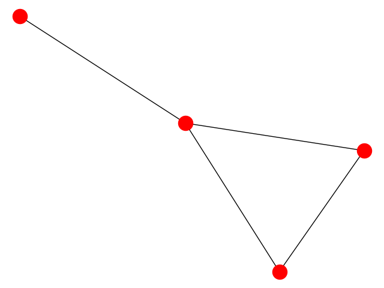

https://networkx.github.io/
NetworkX. Software for complex networks.
PIP (in a virtual environment) pip install networkx APT (for the entire computer) In Debian Linux we have python-networkx, python3-networkx, and dependencies.
NetworkX is a Python package for the creation, manipulation, and study of the structure, dynamics, and functions of complex networks.
import networkx as nx
G = nx.Graph() # an empty undirected graph
# https://mathworld.wolfram.com/LollipopGraph.html
# 1---2 (3,1)-lollipop graph
# | /
# 3---4
for node in (1, 2, 3, 4):
G.add_node(node)
for (a, b) in [(1, 2), (1, 3), (2, 3), (3, 4)]:
G.add_edge(a, b)
G.number_of_nodes() # 4
G.number_of_edges() # 4
G.nodes # NodeView((1, 2, 3, 4))
list(G.nodes) # [1, 2, 3, 4]
G.nodes.data() # NodeDataView({1: {}, 2: {}, 3: {}, 4: {}})
list(G.nodes.data()) # [(1, {}), (2, {}), (3, {}), (4, {})]
G.edges # EdgeView([(1, 2), (1, 3), (2, 3), (3, 4)])
list(G.edges) # [(1, 2), (1, 3), (2, 3), (3, 4)]
G.edges.data() # EdgeDataView([(1, 2, {}), (1, 3, {}), (2, 3, {}), (3, 4, {})])
list(G.edges.data()) # [(1, 2, {}), (1, 3, {}), (2, 3, {}), (3, 4, {})]
G[3] # AtlasView({1: {}, 2: {}, 4: {}})
list(G[3]) # [1, 2, 4]
G.degree # DegreeView({1: 2, 2: 2, 3: 3, 4: 1})
list(G.degree) # [(1, 2), (2, 2), (3, 3), (4, 1)]
G.degree[3] # 3
import matplotlib.pyplot as plt
nx.draw(G)
#nx.draw(G, with_labels=True, font_weight='bold')
plt.show()

P_6 = nx.path_graph(6) C_7 = nx.cycle_graph(7) K_5 = nx.complete_graph(5) K_3_5 = nx.complete_bipartite_graph(3, 5) barbell = nx.barbell_graph(10, 10) lollipop = nx.lollipop_graph(10, 20) petersen = nx.petersen_graph() tutte = nx.tutte_graph() maze = nx.sedgewick_maze_graph() tetra = nx.tetrahedral_graph()